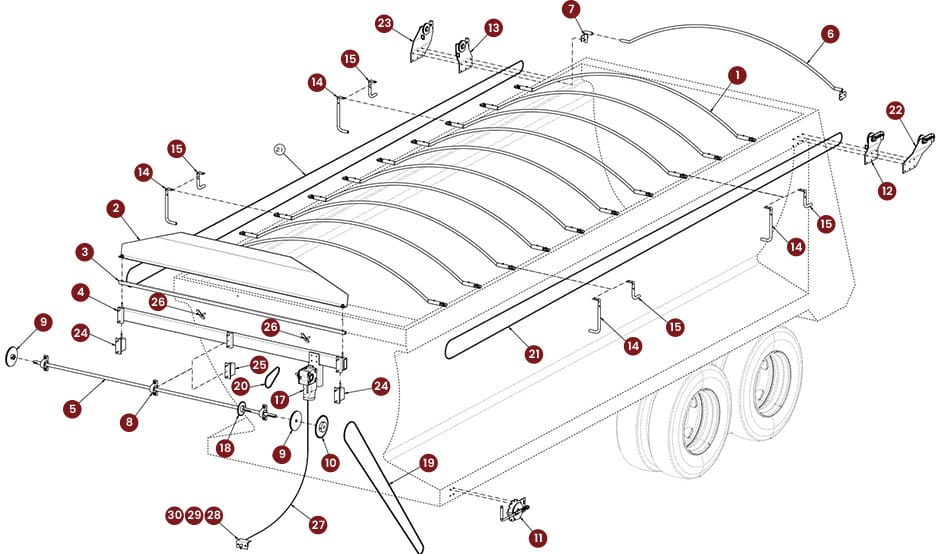

Heavy Duty Cable
- Operation
- Manual or electric
- Cover choices
- Mesh for general hauling; vinyl for weather resistance and applications requiring heat retention.
- Have ready
- Body length, width, load type, bow clearance and operating preference.
PRECISION TARP / PRODUCT RESOURCES
Compare the published options, locate a diagram reference, and gather the details that help the team confirm a fit.
01 / ORIGINAL PRODUCT REFERENCES
Systems, construction details, parts tables and original product photos.
Open original catalog

Diagram numbers identify locations, not quantities. Some positions have no published part number. Send the diagram reference and a photo when asking the team to identify one.
Browse all 45 published replacement-part entries02 / CHOOSE A CONVERSATION STARTER
These are published options. The team confirms the appropriate system, dimensions and mounting for your equipment.
Vinyl is described as weather resistant, not guaranteed waterproof. Ask about temperature requirements, final fit and current specifications before ordering.
03 / PREPARE YOUR REQUEST
This is an inquiry checklist, not a fabrication template. Measure only when equipment is safely parked and accessible; have the installer verify hard-to-reach dimensions.
Prepare a custom request04 / WHEN THE PART NUMBER IS UNKNOWN
Attach these to your email after preparing your request. This preview does not upload photographs or submit messages automatically.
Find a part or request helpReviewed October 21, 2026: all 42 entries in the company’s replacement-parts web tables, plus three additional part numbers in its eight-page PDF, are represented here. The PDF matches the previously reviewed edition. The public shop product endpoint returned no products at the time of review.
The site also covers both published truck-tarp system families, custom roll tarps, aviation baggage cart curtains and the named motor options. Eight parts have original catalog photos; the remaining listings use labeled system diagrams. This is a record of published offerings, not a live inventory feed. Current SKUs, fit, pricing, stock and specifications need company confirmation.
Source differences are noted on affected product pages. The company’s pages also differ on certain motor horsepower/warranty details and the maximum swing-arm body length; those details are not treated as confirmed specifications.
Original replacement-parts page